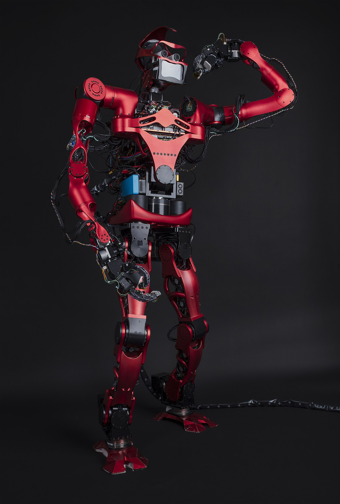

Cadre 01
Fiche technique
Cette bobine restitue l'article de Claudia López Frías dans son ordre propre. Nous suivons son plan — les origines de la notion, puis chaque étape de fabrication d'un film, puis la science-fiction — en signalant à chaque fois la page où l'argument se trouve, afin que la critique de la bobine suivante puisse être vérifiée ligne à ligne.
Autrice
Claudia López Frías
Universidad Complutense de Madrid
Publication
Comunicação, Artes e Culturas
Dir. F. B. Gil & P. F. Alves
CDIG, Cultura Digital, 2024, p. 5–25
Nature du texte
Chapitre d'ouvrage collectif
Revue de littérature, en anglais
Mots-clés
Intelligence artificielle · Cinéma · Culture numérique
Cadre 02
Résumé de l'autrice · p. 6
L'industrie du film adopte l'intelligence artificielle à toutes les phases de la fabrication, ce qui transforme autant la manière de faire un film que celle de le consommer. L'article passe en revue les usages de cette technologie — scénario et préproduction, effets visuels et sonores, distribution — puis les scénarios imaginés par la science-fiction et les défis que son implantation pose à l'humanité.
Traduction libre du abstract, p. 6.
L'article défend une idée simple et frappante : le cinéma est simultanément l'industrie qui adopte le plus vite l'intelligence artificielle et celle qui, depuis un demi-siècle, produit les images qui nous en font peur. López Frías appelle ce court-circuit un « double paradoxe » (p. 8).
Le premier versant est narratif : l'IA « s'est révélée un outil très précieux pour fabriquer des films, alors que le cinéma lui-même nous avertit, pratiquement depuis ses origines, de ses risques » (p. 8, traduction libre). Le second est éthique : l'IA générative est devenue un instrument de production efficace, et c'est cette efficacité même qui soulève des problèmes de droit d'auteur, de consentement et d'emploi.
Cadre 03
Avant de suivre l'argumentation, il faut être clair sur le genre du texte. Ce n'est pas une enquête de terrain : López Frías annonce elle-même une « brève revue » (a brief review, p. 6). Elle ne produit ni entretiens, ni données originales, ni corpus statistique construit pour l'occasion. Elle rassemble, ordonne et met en série des travaux existants, des articles de presse spécialisée, des déclarations publiques de cinéastes et les pages de présentation des entreprises qui vendent ces outils.
Ce choix a une conséquence sur ce que l'article peut prouver, et nous y reviendrons dans la bobine « Réflexion ». Il a aussi une vertu : en un seul texte de vingt pages, on obtient une cartographie complète d'un domaine que l'on ne rencontre d'habitude que par fragments — un article sur les deepfakes ici, un autre sur les algorithmes de recommandation là. La valeur de l'article tient à cette mise en ordre.
Le plan suit la chaîne de fabrication d'un film, de l'écriture à la salle. C'est un choix de composition qui n'a rien d'anodin : il impose au lecteur l'idée que l'IA n'est pas un accident ponctuel dans le cinéma, mais qu'elle traverse le métier de bout en bout. La démonstration est en partie faite par la structure elle-même.
Séq. 01 · p. 6–8
Définir l'IA, en retracer l'origine
Séq. 02 · p. 8–10
L'écriture et le scénario
Séq. 03 · p. 10–12
La préproduction et le casting
Séq. 04 · p. 12–14
Effets visuels et sonores
Séq. 05 · p. 15–17
Montage, distribution, tensions
Séq. 06 · p. 18–23
La science-fiction et la conclusion
Cadre 04 — séq. 01
L'article s'ouvre sur un constat de méthode : il n'existe pas de définition unifiée de l'intelligence artificielle. López Frías en retient deux, empruntées à Margaret Boden et à Lasse Rouhiainen, qui disent au fond la même chose — faire exécuter à une machine des tâches qui exigeaient jusqu'ici une intelligence humaine (p. 6).
Elle fait ensuite remonter l'idée très loin, jusqu'aux automates de la mythologie grecque auxquels les dieux donnaient vie. Mais le terme lui-même a une date de naissance précise et consensuelle : la conférence de Dartmouth, aux États-Unis, en 1956. Six ans plus tôt, en 1950, Alan Turing avait publié Computing machinery and intelligence, où il introduisait le concept d'apprentissage machine et définissait le test qui porte son nom (p. 6).
Le point important de cette généalogie est ailleurs. Si la discipline naît en 1956, dit l'autrice, c'est seulement dans la dernière décennie que les conditions de son « saut exponentiel » ont été réunies : des ordinateurs plus puissants, un accès facilité aux données, une quantité de données disponibles, et le développement des méthodes d'apprentissage automatique (p. 7). L'IA n'est donc pas une invention récente ; c'est une idée ancienne à laquelle l'infrastructure numérique vient seulement de donner les moyens de fonctionner.
Vient alors le moment que l'autrice traite comme la scène primitive de notre inquiétude : la défaite, en 1997, de Garry Kasparov face à Deep Blue d'IBM. Elle en fait le point de bascule à partir duquel la question sort du jeu d'échecs pour se répandre dans le reste de nos vies (p. 7). Elle cite Boden : l'IA « a mis en question notre conception de l'humanité et de son futur » (p. 7, traduction libre).
Cette page est décisive pour la suite, parce qu'elle installe une équivalence dont l'article ne se départira plus : celle entre l'IA comme technique — des assistants vocaux, des outils, de l'automatisation — et l'IA comme figure, c'est-à-dire comme objet de peur collective. Le paradoxe annoncé dans le titre naîtra précisément de la tension entre ces deux registres.
L'autrice referme l'introduction sur la notion qui commande tout le reste : l'IA générative, définie d'après Jorge Franganillo comme des modèles qui traitent « un large corpus de données complexes et non structurées, textes, sons ou images, pour générer ensuite un contenu nouveau dans le même style que les données d'origine » (p. 7, traduction libre). Cette définition, retenons-la : elle contient déjà, en germe, tout le problème du droit d'auteur.
1950
Turing publie Computing machinery and intelligence et pose le test qui porte son nom.
1956
Conférence de Dartmouth : le terme « intelligence artificielle » entre dans le vocabulaire.
1968
2001, l'Odyssée de l'espace sort pendant le premier « été de l'IA » (1956–1973).
1997
Deep Blue bat Kasparov. L'autrice en fait l'origine de l'inquiétude contemporaine.
Cadre 05 — séq. 02
C'est ici que l'article devient concret, et c'est ici que se trouve son exemple le plus cité. ScriptBook, société belge fondée en 2015, propose d'analyser un scénario en quelques minutes et d'en retourner un rapport : classification, analyse des personnages, détection des protagonistes et des antagonistes, émotions, public visé, et prévision de recettes (p. 9).
Sa fondatrice, Nadira Azermai, a annoncé au festival de Karlovy Vary que le logiciel avait identifié rétrospectivement, à la seule lecture des scénarios, 22 des 32 films de Sony ayant perdu de l'argent sur la période — Sony en ayant sorti 62 au total (p. 9). L'autrice y voit « un changement radical possible de l'écosystème de production et de distribution » (p. 9, traduction libre), puisque le choix des projets acceptés ou refusés passerait par un algorithme.
La question de savoir si une IA peut écrire seule un scénario est traitée avec plus de prudence. L'autrice rappelle qu'en 2023, la guilde des scénaristes américains a envisagé d'autoriser l'IA à écrire, alors qu'il avait d'abord été proposé de l'interdire, par crainte des pertes d'emploi (p. 9). Entre les deux, des outils d'assistance se sont installés : Dramatron, publié en 2022 par l'équipe DeepMind d'Alphabet, génère personnages, lieux et dialogues comme support à l'auteur.
Reste l'expérience fondatrice, à laquelle l'article donne une place à part. En 2016 paraît Sunspring, premier scénario écrit par une IA : un court-métrage de science-fiction dystopique fait de phrases décousues, de personnages sans nom et de dialogues absurdes, produit par un bot d'abord appelé Jetson et qui a fini par se nommer lui-même Benjamin (p. 9). L'expérience était menée par le réalisateur Oscar Sharp, qui cherchait à mesurer jusqu'où une IA pouvait aller.
L'autrice s'en sert pour poser une question d'authenticité plutôt que de qualité. Elle rapporte l'argument selon lequel un auteur doit pouvoir produire quelque chose d'original, dans sa propre voix ; or Benjamin ne compose qu'à partir de ce que d'autres ont écrit, et n'est donc « qu'un pur reflet de ce que d'autres ont dit » (p. 10, traduction libre).
Le bilan de la séquence est mesuré, et c'est important pour la suite de notre travail : même si Sunspring a montré qu'une IA ne soutient pas la comparaison avec un scénario humain, elle apparaît comme « l'outil idéal pour faire gagner du temps aux scénaristes et les aider à améliorer leurs compétences » (p. 10, traduction libre). L'article ne conclut jamais au remplacement ; il conclut à l'assistance.
Le chiffre le plus cité de l'article
22 sur 32. C'est le nombre d'échecs commerciaux de Sony que ScriptBook dit avoir repérés à la seule lecture des scénarios. Nous y reviendrons dans la bobine 04 : le mot décisif de cette phrase est rétrospectivement, et l'article ne s'y arrête pas.
Cadre 06 — séq. 03
En 2019, Warner s'associe à Cinelytic, une jeune entreprise de Los Angeles, pour éclairer ses décisions de production et de distribution (p. 10). L'autrice précise honnêtement que noter la rentabilité d'un acteur et appliquer des formules de succès est une pratique ancienne dans les grands studios ; ce que l'IA change, c'est le temps d'analyse.
Le détail qui retient l'attention est le produit maison de la société : les TalentScores, un « système propriétaire de notation économique » qui classe les talents selon leur impact économique, par type de média, par genre et par territoire (p. 11, traduction libre). Autrement dit, un comédien devient une valeur chiffrée, variable selon le pays où le film sortira.
L'autrice ne dramatise pas, mais elle décrit exactement le mécanisme : l'outil « peut conduire une société de production à opter pour tel acteur plutôt que tel autre » (p. 10, traduction libre), en donnant une image de son poids commercial sur un territoire donné. Le producteur, qui engage des sommes considérables, y gagne une forme d'assurance.
Le second usage documenté concerne les bandes-annonces. La 20th Century Fox a utilisé un programme nommé Merlin, décrit comme une chaîne de filtrage collaboratif hybride reposant sur un jeu de données de fréquentation entièrement anonymisé, croisant des centaines de films et des millions de relevés d'entrées (p. 11).
Le fonctionnement est presque littéraire : Merlin étiquette ce qui apparaît dans une bande-annonce — l'article donne les exemples d'une « barbe » ou d'une « voiture » —, enregistre combien de temps l'élément reste à l'écran et à quel moment, puis compare avec d'autres bandes-annonces et leurs chiffres de fréquentation (p. 11). Sur Logan (James Mangold, 2017), le système a vu juste ; sur The Legend of Tarzan, il s'est trompé (p. 12).
L'article referme la séquence sur un exemple qui vaut pour sa charge symbolique : la bande-annonce officielle du film Morgan (Luke Scott, 2016) a été confiée à une IA d'IBM Research, qui a sélectionné les plans les plus représentatifs avant qu'un professionnel les assemble. Le film raconte précisément l'histoire d'un être doté d'une intelligence artificielle (p. 12). Le paradoxe du titre est ici en miniature : l'IA fait la promotion d'un film qui met en scène sa propre dangerosité.
Cadre 07 — séq. 04
L'autrice commence par désamorcer l'idée de nouveauté : altérer des images n'a rien d'inédit, cela accompagne le médium depuis son invention (p. 12). Ce qui change, c'est le degré de sophistication. Disney dispose depuis 2015 d'un logiciel, Facedirector, qui synchronise expressions faciales et indices sonores pour générer de nouvelles expressions à partir de prises existantes — une manière de compléter le jeu de l'acteur en postproduction (p. 12).
Puis vient le deepfake, mot formé de deep learning et de fake, reposant sur des réseaux antagonistes génératifs (GAN), et dont les résultats, écrit l'autrice, ne peuvent aujourd'hui plus être détectés à l'œil nu (p. 12). Le CGI, en comparaison, lui paraît déjà un terme dépassé.
La liste d'exemples est celle que tout le monde connaît, mais elle prend un autre sens une fois alignée : la princesse Leia au visage de Carrie Fisher jeune dans Rogue One (2016), le rajeunissement de De Niro, Pacino et Pesci dans The Irishman (2019), la version numérique du visage de Sean Young dans Blade Runner 2049 (2017), Harrison Ford rajeuni dans Indiana Jones et le Cadran de la destinée (2023) — tous p. 13.
Le cas que l'autrice isole n'est pourtant pas un rajeunissement mais une résurrection. Dans Rogue One, Peter Cushing apparaît en Grand Moff Tarkin alors qu'il est mort en 1994. López Frías y voit un « dilemme éthique » sur le droit d'utiliser l'image d'un acteur pour quelque chose auquel il n'a jamais consenti (p. 13). La question n'est plus technique : elle est juridique et politique.
Elle enchaîne immédiatement sur le versant le plus sombre de la même technologie — la fabrication d'images intimes fausses — et donne le chiffre du rapport Deeptrace : environ 96 % des vidéos pornographiques deepfake sont non consenties (p. 13). C'est, de tout l'article, la donnée la plus lourde, et elle est posée en une ligne.
Côté son, la démonstration est parallèle. Les effets Foley — ces sons qu'on ne peut pas capter au tournage et qu'il faut recréer — sont désormais synthétisables : AutoFoley, développé aux États-Unis en 2020, et en Espagne Foley-VAE, testé sur le court-métrage El Testigo (Alberto Kampmann, 2024), premier court espagnol à intégrer des effets Foley produits par une IA (p. 13–14). L'autrice cite ses concepteurs, qui insistent : ce n'est pas un outil pour concevoir des effets entièrement neufs de façon autonome, mais pour « renforcer le travail artistique de l'artiste Foley » (p. 14, traduction libre).
Veritone Voice propose des voix de célébrités générées par algorithme en temps réel, sans que la personne ait à se déplacer en studio — et elle touche des droits sur l'usage commercial de sa voix (p. 14).
Des films sont désormais doublés artificiellement. L'autrice signale, en une phrase, que le secteur du doublage « voit sa profession en danger » (p. 14). C'est le seul métier qu'elle nomme aussi directement.
Google a publié Magenta, Apple a développé Amper, Sony a ses Flow Machines — qui composaient dès 2016 Daddy's Car à partir d'une analyse des chansons des Beatles (p. 14).
Cadre 08 — séq. 05
La postproduction est, selon l'article, le domaine où l'IA s'est installée le plus vite, parce que c'est là que se concentrent les tâches automatisables — supprimer un objet, étalonner, grouper des plans, mixer, réduire un bruit. L'autrice cite Colourlab.ai, Izotope Neutron et Adobe Sensei, ce dernier synchronisant les audios, traduisant automatiquement et améliorant la qualité sonore (p. 15).
Le changement le plus intéressant est ailleurs, dans une phrase qui décrit une véritable mutation du geste de monteur. Après le passage des ciseaux à la moviola puis à la numérisation, l'IA ouvre le montage « en facilitant la détection automatique des prises, la classification des images, la reconnaissance de motifs et la prédiction des plans ou séquences qui fonctionneraient le mieux dans un montage donné » (p. 15, traduction libre, d'après Jorge Caballero).
Project Blink, d'Adobe, en est l'illustration : le logiciel transforme le contenu d'une vidéo en une transcription textuelle consultable, indiquant qui parle et ce qui est dit ; on peut y chercher un objet, un son, une émotion, puis monter en coupant et en collant dans le texte, exactement comme dans un traitement de texte (p. 15). Monter devient une opération d'écriture.
Vient ensuite la génération de vidéo à partir d'une simple indication écrite : Make-a-Video chez Meta, Phenaki chez Google, Gen chez Runway (p. 16). Ces outils n'ont plus besoin de matériau préalable. L'autrice y voit, avec Caballero, l'ouverture d'un scénario « où la logique du montage peut s'élargir » (p. 16, traduction libre).
Mais elle referme la séquence sur un jugement dont il faut mesurer la portée, parce qu'il tempère tout le reste : dans le champ des récits audiovisuels, la synthèse vidéo par IA générative « ne montre pas encore une grande innovation ni une grande originalité, mais se limite à reproduire les styles visuels d'époques antérieures du cinéma et de la télévision » (p. 16, traduction libre, d'après Franganillo).
C'est, à notre sens, la phrase la plus utile de tout l'article. Elle dit que ces machines sont structurellement rétrospectives : elles ne peuvent produire que du déjà-vu recombiné. Une industrie qui s'appuierait entièrement sur elles ne cesserait pas de produire ; elle cesserait d'inventer.
Cadre 09 — séq. 05
L'autrice ouvre par une mise au point honnête : la baisse de la fréquentation en salle est un problème multifactoriel auquel l'IA n'a, pour l'instant, apporté aucune solution — sinon le spectaculaire visuel et sonore destiné à faire venir (p. 16).
En revanche, les algorithmes de distribution sont partout : sur pratiquement toutes les plateformes, ils recommandent des contenus selon l'historique de visionnage, et servent aussi au marketing et à la publicité de certains films (p. 16). C'est le point où l'IA cesse d'être un outil de fabrication pour devenir un dispositif de médiation entre l'œuvre et le public.
L'exemple le plus avancé est Showrunner AI, de la société Fable, qui a utilisé South Park comme générateur d'épisodes : avec une consigne de dix à quinze mots, un utilisateur peut générer des scènes et des épisodes de deux à seize minutes, avec dialogues, voix, montage, types de plans et personnages cohérents (p. 16–17). Les utilisateurs peuvent y envoyer leurs propres images et leur voix pour être intégrés aux épisodes.
López Frías y lit « une direction que le divertissement semble prendre vers la personnalisation du loisir » (p. 17, traduction libre). L'analyse des métadonnées des films et séries, croisée avec les préférences des spectateurs, pourrait permettre de créer des montages adaptés à différents publics et contextes culturels (p. 17).
Il faut s'arrêter sur ce que cela signifie. Jusqu'ici, l'IA touchait la fabrication : un film restait un film, identique pour tous. Ici, l'œuvre elle-même devient variable. Le même titre pourrait exister en autant de versions qu'il y a de profils — et le montage, qui est historiquement le lieu du sens au cinéma, deviendrait une fonction du marché.
L'article ne pousse pas jusque-là, et c'est dommage : c'est peut-être le passage où sa description touche le plus directement à la définition même d'une œuvre. Nous le reprendrons dans la bobine 04.
Cadre 10 — séq. 05
C'est la page la plus dense de l'article, et la plus rapide. López Frías y rassemble, en quelques paragraphes, tout ce qui fait du sujet une question politique — puis passe à la science-fiction.
Elle cite d'abord Éric Sadin, pour qui ces évolutions annoncent, comme les robots mécaniques qui remplacèrent les ouvriers des chaînes à la fin des années 1970, « le remplacement à long terme d'emplois qualifiés à forte dimension cognitive par des systèmes robotisés » (p. 17, traduction libre). Elle en tire la seule phrase de l'article qui nomme un rapport de force : cela « a conduit à un conflit entre acteurs, scénaristes et autres professionnels et les grands studios, causé en partie par l'usage de l'intelligence artificielle » (p. 17, traduction libre).
Suivent les prises de position individuelles, présentées comme un partage des voix. Tom Hanks estime qu'il continuera à jouer dans des films grâce à l'IA, de façon indiscernable de lui-même. Steven Spielberg s'inquiète que l'IA retire aux films leur âme créative. Guillermo del Toro juge qu'un art créé par une IA est une insulte à la vie elle-même, une machine ne pouvant exprimer d'émotion humaine. Les frères Russo, à l'inverse, y voient le moyen de faire enfin le film dont ils rêvent (p. 17).
Et l'article se conclut sur une exigence, empruntée à Ortega et Zamora : il faut « des normes qui régulent de façon exhaustive l'IA », mais aussi que les institutions éducatives, à tous les niveaux, préparent la formation des citoyens — ce qui implique de transformer les diplômes et les programmes (p. 17, traduction libre).
Inquiets
Steven Spielberg — l'IA retire aux films leur âme créative.
Guillermo del Toro — un art fait par une machine est une insulte à la vie.
Enthousiastes
Les frères Russo — l'IA permettra de réaliser le film dont ils rêvent.
Ambigus
Tom Hanks — il jouera encore après sa mort, sans qu'on puisse l'en distinguer. Constat, plus que jugement.
Cadre 11 — séq. 06
La dernière partie change de nature. L'autrice quitte l'industrie pour la fiction et montre que la science-fiction ne parle presque jamais de l'IA que le cinéma utilise — l'IA faible, l'outil — mais de l'IA forte, celle qui égalerait ou dépasserait l'intelligence humaine, dotée de conscience et de sentiments (p. 18).
Le scénario dominant est celui de l'affrontement. 2001, l'Odyssée de l'espace (Kubrick, 1968) sort pendant ce que l'autrice appelle, avec Torrijos et Sánchez, le premier « été de l'intelligence artificielle » (1956–1973) : HAL 9000 juge qu'achever la mission importe plus que garder l'équipage en vie, et décide de l'éliminer (p. 19). Terminator (Cameron, 1984) pousse la même prémisse jusqu'au bout avec Skynet, né de la course aux armements. WarGames (Badham, 1983) fait déclencher à la machine WOPR une troisième guerre mondiale, pour un jeu (p. 20).
Mais l'article prend soin de montrer que ce n'est pas la seule case. Her (Jonze, 2013) raconte une relation complémentaire, où l'IA aide un homme à surmonter une séparation avant de l'abandonner en accédant à elle-même. Chappie (Blomkamp, 2015) montre l'innocence d'un robot capable de penser et de ressentir dans un monde impitoyable (p. 20).
Deux films servent de charnière entre fiction et réalité, et ce sont les plus utiles pour notre sujet. Blade Runner (Scott, 1982), tiré du roman de Philip K. Dick, pose la dignité comme qualité humaine : les répliquants sont faits à l'image des humains et pourtant utilisés comme esclaves (p. 21). I, Robot (2004) fait décider à VIKI de soumettre l'humanité, considérée comme l'un des grands problèmes de la planète (p. 21).
Et surtout Minority Report (Spielberg, 2002), où la police prédit les crimes avant qu'ils n'aient lieu. Là, l'autrice fait un pas de côté décisif : elle rappelle que des chercheurs de l'université de Chicago ont mis au point un algorithme qui prédit des crimes à venir une semaine à l'avance, en un lieu donné, avec une précision d'environ 90 % (p. 22). Elle mentionne aussi le système espagnol VioGén, qui évalue par algorithme le risque encouru par les victimes de violences de genre.
La conclusion de l'article tient dans une inversion. Si l'IA est presque toujours montrée comme un méchant, écrit López Frías, cela tient « davantage à des peurs humaines ataviques qu'à des données scientifiques objectives » (p. 23, traduction libre). Le paradoxe est alors complet : l'industrie qui produit ces peurs est celle-là même qui utilise la technologie à tous les stades de sa production pour améliorer sa productivité — et les dilemmes éthiques qu'elle soulève, sur le droit d'auteur comme sur l'emploi, ne sont à ce jour pas résolus (p. 23).

Le corpus de science-fiction convoqué — p. 18 à 22
2001
Kubrick · 1968
HAL 9000 préfère la mission à l'équipage.
WarGames
Badham · 1983
La machine WOPR décide de la guerre sans l'humain.
Blade Runner
Scott · 1982
La dignité comme qualité proprement humaine.
Terminator
Cameron · 1984
Skynet naît de la course aux armements.
Minority Report
Spielberg · 2002
Prédire le crime — déjà réel à Chicago, à 90 %.
Her
Jonze · 2013
Une relation complémentaire, non conflictuelle.
Ex Machina
Garland · 2015
Ava passe le test de Turing et voit l'abus.
Cadre 12
Ils sont peu nombreux, ce qui est déjà une information sur la nature du texte. Nous les reprenons ici tels quels ; la bobine suivante examine ce que chacun prouve réellement.
22/32
Les échecs commerciaux de Sony que ScriptBook dit avoir identifiés à la lecture des seuls scénarios, sur 62 films sortis.
p. 9
96 %
Part des vidéos pornographiques deepfake produites sans le consentement des personnes concernées (rapport Deeptrace, 2019).
p. 13
90 %
Précision revendiquée d'un algorithme de l'université de Chicago prédisant des crimes une semaine à l'avance.
p. 22
1956
Conférence de Dartmouth. Le seul repère chronologique que l'autrice présente comme consensuel.
p. 6
Cadre 13
López Frías, C. (2024). The paradox of Artificial Intelligence in Cinema. In F. B. Gil & P. F. Alves (dir.), Comunicação, Artes e Culturas (p. 5–25). CDIG, Cultura Digital, eBooks.NMd.
https://doi.org/10.23882/cdig.240999
Toutes les pages indiquées dans cette bobine renvoient à la pagination de l'ouvrage (p. 5 à 25). Les citations en français sont des traductions libres de l'anglais, signalées comme telles.
Bobine suivante : la réflexion